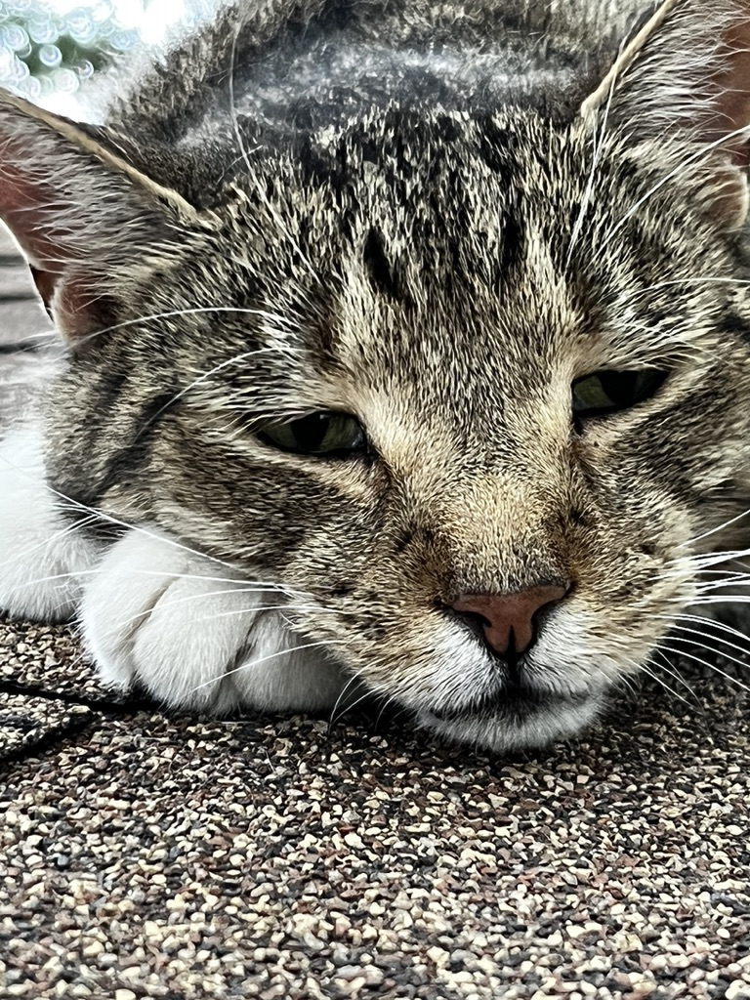
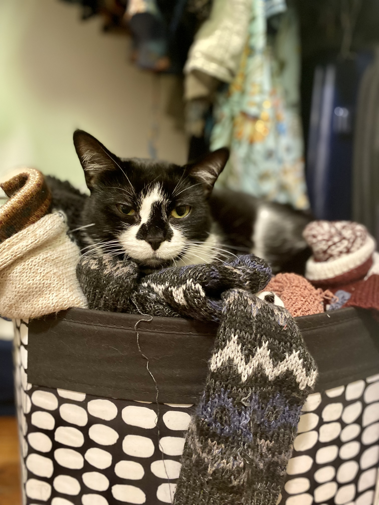
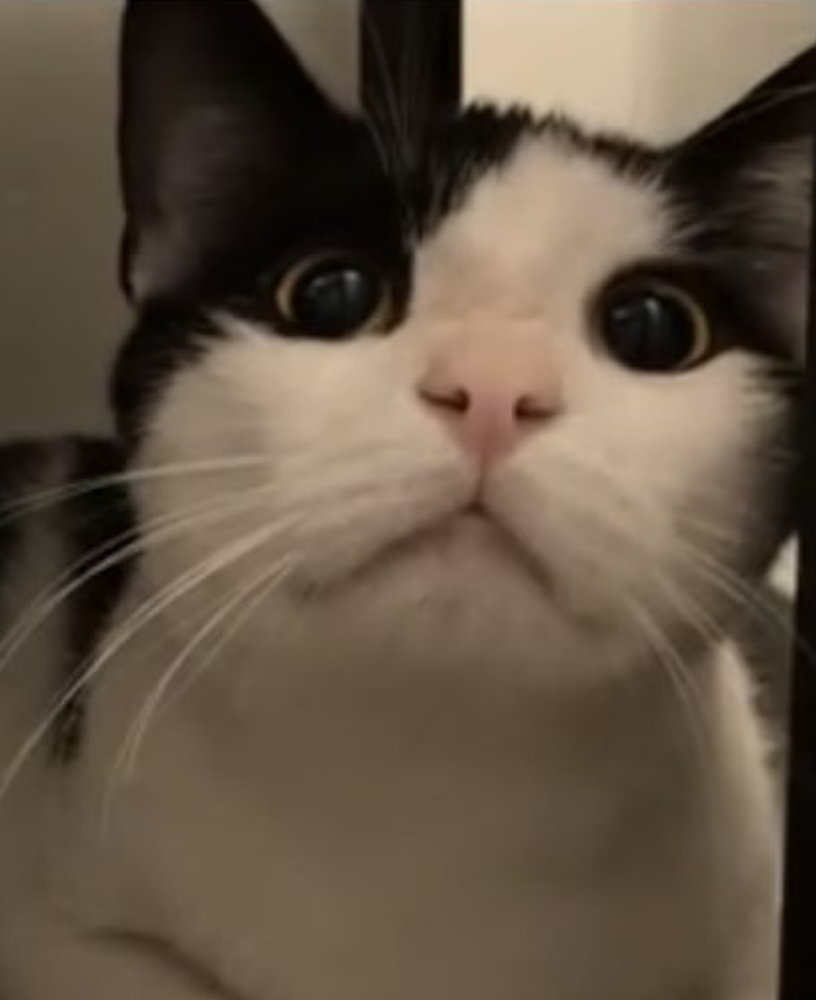
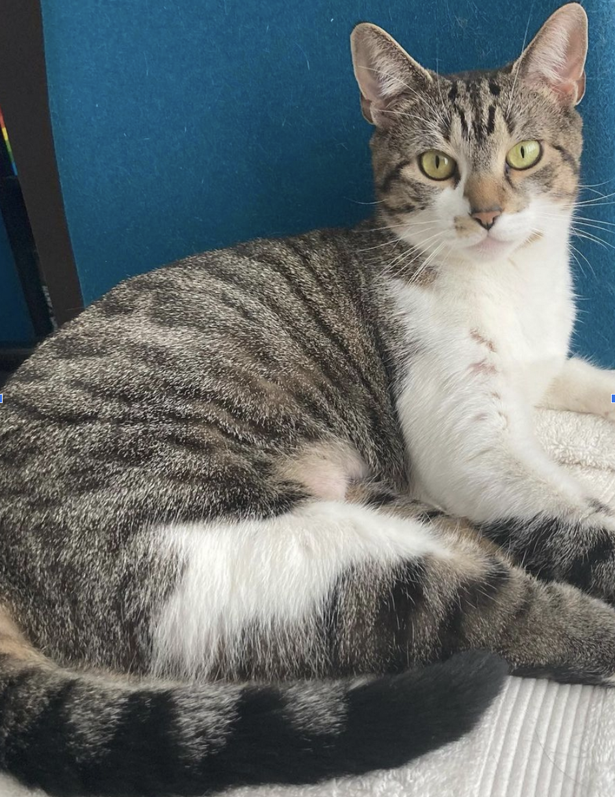

I am six years old, neutered, and vaccinated. I love to play with catnip toys A LOT! I would like to go to my forever loving home. Please foster or adopt me by contacting AdoptLeo@wffny.org
Leo

I am almost four years old, spayed, and vaccinated I would love to finally get my forever home. I am a little timid, but very playful and I look forward to finally finding my loving family who will not abandon me again. You can foster or adopt me by emailing AdoptLuna@wffny.org
Luna

I am one year old, neutered & vaccinated. I am a little shy, quiet, independent, and extremely playful. I love any toys, but especially interactive toys. You can foster me at AdoptBB@wffny.org or even better, adopt me!
BB

I am a ten month old kitten, spayed, and vaccinated. I am super sweet, playful, loving, and gorgeous. Please take me home as soon as possible! Adopt or foster me at AdoptWall-E@wffny.org
Wall-E

Pluto

Lunetta